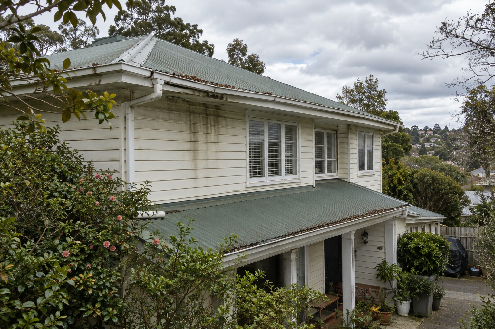
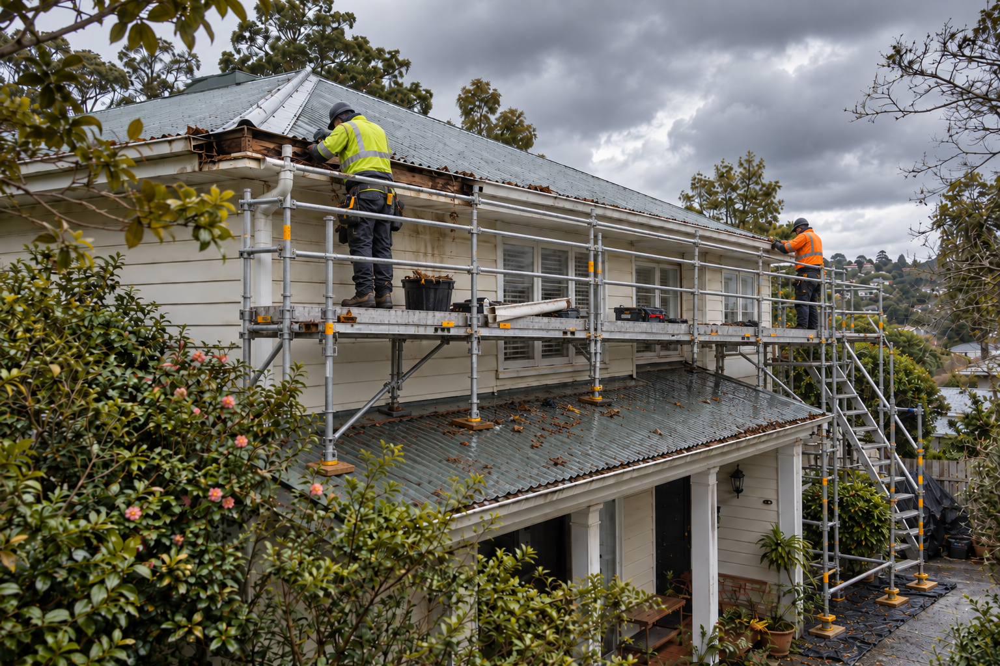
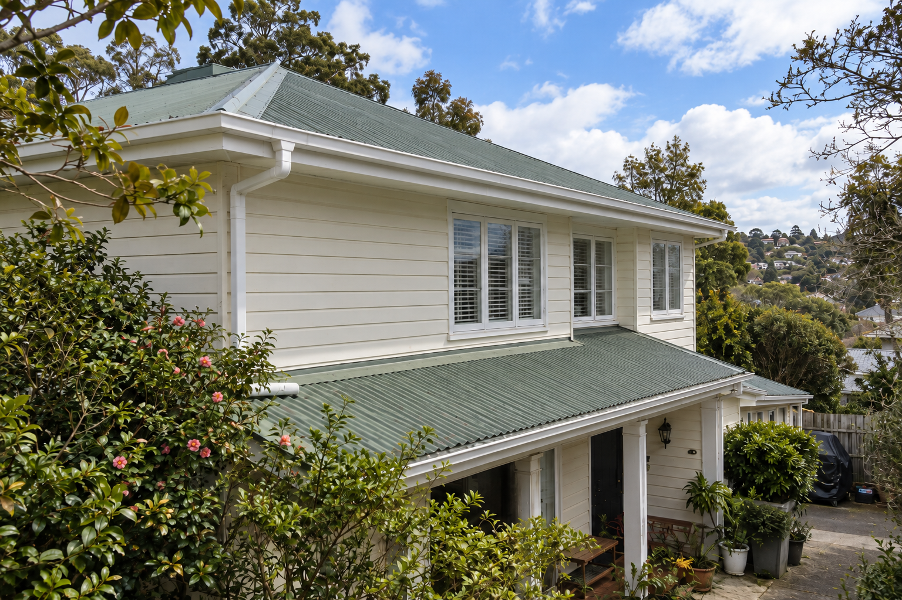
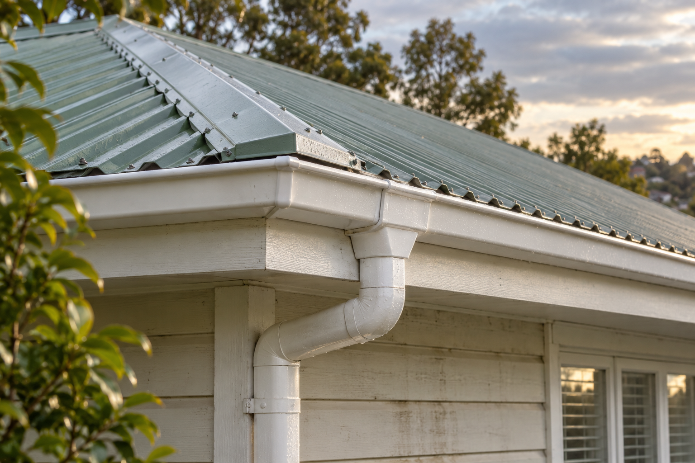

Recent project
Gutter cleaning & roofline maintenance
A photographic project sequence showing gutter cleaning and roofline maintenance around a residential property.
The project
Gutter cleaning and roofline maintenance
These images document maintenance around the roofline, gutters and downpipe of a residential property. Relevant enquiry contexts include blocked gutter cleaning and an overflowing gutter assessment; final scope depends on safe access and the cause found on site. Share clear photos and the property location so our team can understand the work you need.
Project gallery
Gutter cleaning details shown




Start your request
Tell us what needs attention
Share your exterior maintenance task and Perth property location.